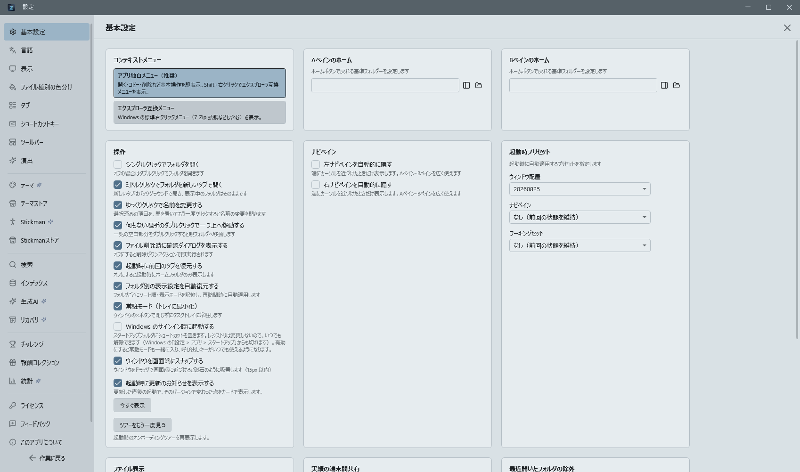
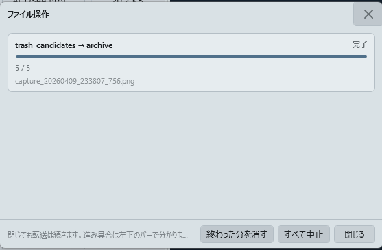
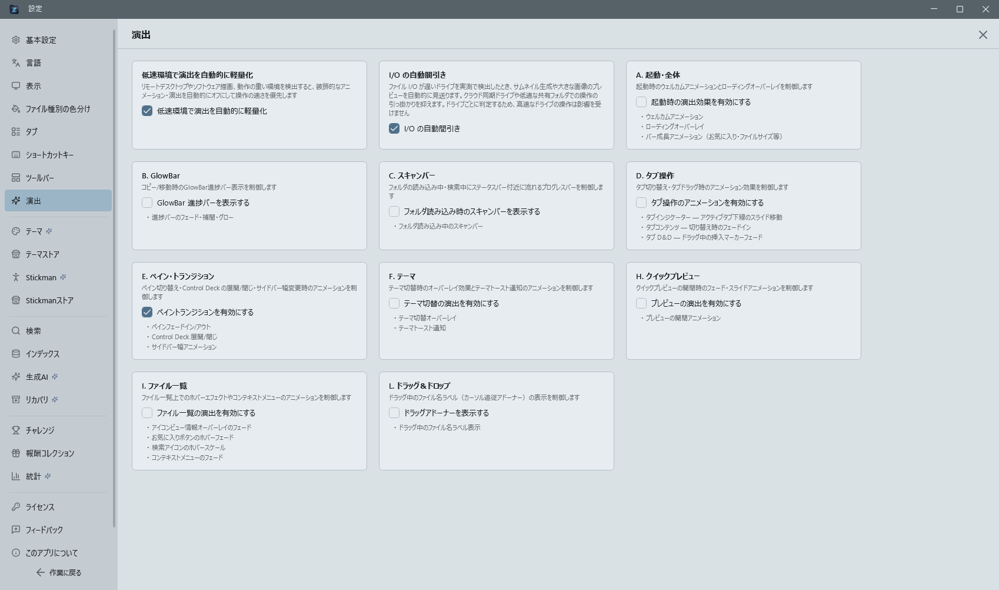
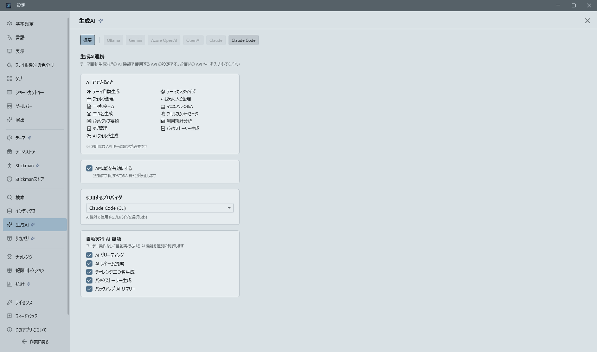

アプリ設定（Control Deck）の全項目¶
Ctrl+Shift+O で開く設定ビューは 11 カテゴリに分かれています。各カテゴリの主要項目を以下にまとめます。

基本設定 (General)¶
作者のおすすめ
作者がふだん使っている環境をまとめて当てます。当てるのは、ナビペインの配置（プリセットの「作者構成」）、ツールバーの全部のボタン、タイトルバーのレベルと二つ名のバナー、AI / Pro バッジ、機能推薦、起動時のテーマ適用通知、リングランチャーの既定の配置です。はじめて使う方の既定は普通のファイラーに近い控えめなものにしてあるので、このアプリらしい使い方を試したいときの入口になります。当てる前に確かめます。リングランチャーの割り当てを自分で変えていて、どこにも保存していないときは、失われることも知らせます。XP ランキングへの送信は変えません。どれも後から個別に設定し直せます。
コンテキストメニュー
ファイル一覧の右クリック時に表示するメニューを選択します。
- アプリ独自メニュー（推奨）: 開く・コピー・削除・名前の変更・お気に入り・インデックス検索など基本操作を即座に表示。Shift+右クリックでエクスプローラ互換メニューへ一時切替できます。
- エクスプローラ互換メニュー: 7-Zip など Windows の標準右クリックメニュー（シェル拡張含む）を表示。
ホームフォルダ
A ペイン・B ペインのホームアドレスを個別に設定します。
- 表示中のフォルダを設定: A/B ペインで表示中のフォルダをホームに設定。
- フォルダを選択: ダイアログからフォルダを選択して設定。
操作
- シングルクリックでフォルダを開く: オンでシングルクリック、オフでダブルクリック遷移。
- ファイル削除時に確認ダイアログを表示する: オフでシェルの確認を省略してごみ箱へ移動。
- 起動時に前回のタブを復元する: オフでホームフォルダのみで起動。
ナビペイン（エッジホバー自動表示）
- 左ナビペインを自動的に隠す: オンにすると左ナビペインを通常は閉じておき、ウィンドウ左端の細い領域（12px）にマウスカーソルが入ったとき、約 0.15 秒後にオーバーレイとしてスライドイン表示します。その外側 32px までの範囲も、1 秒とどまれば同じように開きます — 端を狙い損ねても拾えるようにするための保険なので、通りすがりに横切っただけでは開きません。カーソルが離れると約 0.4 秒後にスライドアウトします。A ペイン・B ペインの表示領域を最大限に使いたい場合に有効です。
- 右ナビペインを自動的に隠す: 右側のナビペインに対する同様のトグル。左右独立して ON/OFF できます。
- ピン留め: 自動表示中のナビペインヘッダ右上にピン留めボタンが表示されます。クリックすると以後カーソルが離れても閉じなくなり、もう一度クリックすると解除されて通常の自動隠しに戻ります。ピン状態はアプリ再起動でリセットされます。
- 表示切替のキー・リングランチャーから開く: 自動的に隠している側でも、「左ペインの表示切替」「右ペインの表示切替」（既定
Ctrl+Shift+[/Ctrl+Shift+]、リングランチャーの ◀ ▶）で一時的に出せます。もう一度同じ操作をするか、ナビペインの外をクリックすると閉じます。ピン留めしていても、表示切替で閉じるとピン留めは外れます。自動的に隠す設定そのものは変わりません。 - D&D／コンテキストメニュー中の保護: ナビペイン上でドラッグ＆ドロップ中、または右クリックメニューを開いている間は、自動的な閉じる動作が抑制されます。
- 既定値はどちらも OFF（v0.48.3 以前と同じ「常時表示／手動トグル」挙動）です。
表示
- タイトルバーにパスを表示する: フォーカス中のペインのフルパスをタイトルバーに表示。
- 拡張子を表示する: オフでファイル名から拡張子を非表示。
- 隠しファイル・フォルダを表示する: Windows の隠し属性ファイルの表示切替。
- 一覧の行を交互に色分け: オンで一覧の行を1行おきにごく淡く色分けし、横に長い一覧でも行を目で追いやすくします（既定オフ）。表示色は固定値ではなく現在のテーマの背景色に対して自動計算されるため、どのテーマに切り替えても自然に馴染みます。
- ダウンロードフォルダを更新日時で並べる: オンでダウンロードフォルダに移動した際、自動的に更新日時の新しい順にソート（他フォルダへ移動すると元の並びに戻る）。
常駐モード
ウィンドウの×ボタンを押してもアプリが終了せずシステムトレイに最小化されます。詳細な操作対応表は 常駐モードを参照。
Windows のサインイン時に起動する
Windows にサインインしたときに Zenith Filer を起動します。既定はオフです。
スタートアップフォルダにショートカットを置くだけの仕組みで、レジストリは変更しません。解除はこのチェックを外すほか、Windows の 「設定 > アプリ > スタートアップ」 からも行えます。
オンにすると常駐モードも同時に有効になります。常駐していないとウィンドウを閉じた時点でアプリが終了し、アプリ呼び出しキー（アプリの呼び出しキーが効かないとき）が効かなくなるためです。起動は最小化状態で行うため、サインインのたびにウィンドウが前面に出ることはありません。
ウィンドウを画面端にスナップする
オンのとき、ウィンドウをドラッグして画面端（タスクバーを除いたワークエリア）に 15px 以内まで近づけると、磁石のようにピタッと端へ吸着します。上下左右の各辺と四隅に対応し、ウィンドウが表示されているモニタを基準に判定するためマルチモニタ環境や高 DPI でも自然に揃います。そのままドラッグを続ければ引き剥がせます。リサイズ時は吸着せず、Windows 標準の Aero Snap（Win + 矢印など）とも併用できます。既定はオン。
通知の表示時間
短め（1.5 秒）／標準（3 秒）／長め（5 秒）から選択。
テキストエディタ
「テキストエディタで開く」コンテキストメニューで使用する実行ファイルを明示指定できます。OS の .txt 関連付けに依存せず、お好みのエディタ（VS Code / Notepad++ / サクラ / Notepad など）を直接起動します。
- 実行ファイルパス: エディタの
.exeパスを直接入力するか、[参照…]ボタンで選択。空欄にすると OS の既定アプリにフォールバックします。 [自動検出]: PATH 上の VS Code →%LOCALAPPDATA%\Programs\Microsoft VS Code\Code.exe→ Notepad++ → サクラ → Windows 標準 Notepad の順に探索し、最初に見つかった実行ファイルを設定します。- 指定したパスが存在しない場合は安全側に倒れ、OS 既定アプリで開きます。
- 対象に足す拡張子: 「テキストエディタで開く」を出す拡張子を、カンマ区切りで足せます（例:
csv, dat）。先頭の.や*.は付けても付けなくても構いません。既定で対象の拡張子（.txt・.md・.jsonなど）はそのまま残り、欄の下に一覧が出ます。足した拡張子は、2 つのファイルを並べる「テキスト比較」の対象にもなります。
検索 (Search UI)¶
検索の挙動（検索実行時の表示先を 3 パターンから選択）
- 同一ペイン・新規タブ: Enter で新規タブに検索結果を表示（従来どおり）。
- 同一ペイン・現在タブで即時検索: Enter で現在のタブに検索結果を表示、クリアで一覧に戻る。
- 反対ペイン・新規タブ: Enter で反対ペインに新規タブ表示。1 ペイン時は自動で 2 ペインに切替。
検索結果のパスクリック時の挙動（パス列クリック時の表示先を 3 パターンから選択）
- 同一タブで表示: 検索結果ビューから通常一覧に切替。
- 同一ペイン・新規タブ: 同一ペインに新規タブで表示。
- 反対ペイン・新規タブ: 反対ペインに新規タブで表示（1 ペイン時は自動で 2 ペインに切替）。
検索時の表示設定
- 検索時に自動的に 1 画面モードに切り替える: オンで検索実行時に 1 ペインモードへ自動切替し検索結果を広く表示。B ペインで検索した場合は検索タブが A ペインに表示されます。
インデックス (Indexing & Freshness)¶
インデックスの更新タイミングと負荷
- 変更を自動で取り込む:
FileSystemWatcherでファイル変更を監視して即時差分更新。 - 一定間隔でまとめて更新する: 1 時間／2 時間／4 時間／1 日ごとに登録フォルダ全体を再スキャン。
- 必要なときだけ更新する: インデックスビューの「未インデックスを作成」または「フル再構築…」を押したときのみ更新。起動時の自動インデックスなし。
パフォーマンスと負荷
- 省エネモードでインデックスを更新する: CPU とディスク使用を抑え、他アプリへの影響を小さくします（
CpuIdleService経由、アイドル実行（CPU 負荷回避） 参照）。 - ネットワークドライブは軽めに処理する: UNC やマップドドライブをローカルよりゆっくり処理し、帯域・サーバ負荷を抑えます。
- フル再インデックス最短間隔: 6 時間／12 時間／24 時間。間隔内の手動フル再構築は差分更新に置換されます。
検索結果の鮮度
- できるだけ最新の状態を保つ（鮮度優先）: インデックス検索時に全ターゲットフォルダの差分更新・未インデックス作成をバックグラウンド開始し、検索と並行してインデックス更新。
- インデックスが古い可能性があるときにメッセージを表示する: 未インデックスフォルダがある場合、検索結果ビュー上に注意メッセージを表示。右端の × で閉じられます。
表示 (Display)¶
新規タブのデフォルト表示
- フォルダを先頭に表示する（ON/OFF）。
- デフォルトのソート順: 名前／更新日／サイズ／拡張子 × 昇順／降順。
Ctrl+Tやパス指定で開いた新規タブに適用、検索結果タブと既存タブには適用されません。
ファイル一覧の行高
超コンパクト（20px）／コンパクト（24px）／標準（32px）／ゆったり（40px）。変更は即座に A/B 両ペインに反映され、再起動後も保持されます。
コピー中のウィンドウ
コピーや移動を始めると、進み具合のウィンドウが出ます。1 つのウィンドウに操作が行として並び、それぞれに速度・残り時間・件数・サイズ・いま処理しているファイルが出ます。行ごとに一時停止・再開・中止ができ、下段に「すべて中止」「終わった分を消す」があります。ウィンドウを閉じても転送は続きます（画面左下のバーが引き継ぎます）。タスクバーのアイコンにも進み具合が出るので、ほかのアプリで作業していても分かります。すべて成功すると少し待ってから自動で閉じ、中止や失敗があった回はそのまま残ります（結果を読めるようにするためです）。

出し方は 3 つから選べます。常に出す（既定）／大きいときだけ出す（50 件または 50MB 以上）／出さない（左下のバーだけ）。
文字とアイコンの大きさ
一覧の文字・一覧のアイコン・タブの文字の大きさを、それぞれ個別に決められます。いずれも既定は 「自動（行の高さに合わせる）」 で、これまでと同じ見た目です。自分で選ぶと、行の高さを変えても文字の大きさはそのまま保たれます。タブの文字は A/B ペインのタブと、ナビペインのタブ一覧の両方に効きます。読めない大きさにならないよう、文字は 8〜32、アイコンは 8〜48 の範囲に収められます。
選択中の行の外枠
選択中の行を、背景の塗りに加えてアクセント色の外枠でも示します（既定でオン）。マウスを乗せた行と、キーボードで選んだ行を見分けやすくするためのもので、テーマによって塗りの濃さが近い場合でも「いまどこを選んでいるか」が分かります。塗りだけの表示に戻したいときはオフにしてください。
ファイル種別の色分け (File Type Colors)¶
ファイル一覧のファイル名の文字色を、拡張子に基づくファイル種別ごとに変えられる機能です（既定オフ）。専用の設定ページから、以下を設定できます。
- 有効化: マスタートグルをオンにすると、ルールに従って一覧の文字色が種類ごとに変わります。
- おすすめルール（7カテゴリ）: 画像・動画・音声・圧縮ファイル・実行ファイル・書類・コードの7カテゴリについて、拡張子と色の組み合わせをあらかじめ用意しています。
- 自由編集: 各ルールの対象拡張子・色（
#RRGGBB）・有効/無効はすべて編集できます。「ルールを追加」で新しいルールを作成でき、ユーザーが追加したルールは削除も可能です（ビルトインの7ルールは無効化のみで削除は不可）。 - 既定に戻す: ボタン1つでおすすめのルールセットに一括で戻せます。
- 一覧の交互色分けと同じく、実際に表示される色は現在のテーマの背景に対して自動調整されるため、どのテーマに切り替えても読みづらくなりません。
演出 (Effects)¶

アプリ内の演出効果を 12 カテゴリに分類し、カテゴリ別に ON/OFF トグルで制御できます。各カテゴリの詳細と対象 UI は 演出カテゴリ（Effects）— 12 カテゴリの詳細 の表を参照してください。
低速環境で演出を自動的に軽量化（既定オン）: リモートデスクトップやソフトウェア描画の環境、実際の画面切替が遅い環境を自動検出し、装飾的な演出（タブ操作・ペイン・トランジション・テーマ・プレビュー・一覧・ドラッグ＆ドロップ）を一括でオフにして操作の速さを優先します。自動軽量化が働いたときはトーストで通知されます。進捗表示（GlowBar・スキャンバー）と起動演出は対象外です。自動軽量化された場合も、この設定をオフにすれば従来どおり各カテゴリの設定で演出が有効になります。
動画サムネイル（追加ダウンロード）: mp4・mov・mkv など Windows が対応している形式のサムネイルは、追加の導入なしで表示されます。flv のように Windows がサムネイルを作れない形式でも表示したい場合だけ、このボタンから拡張を導入してください。約 130MB をダウンロードし、data\ffmpeg\ に配置します。導入すると、Windows が作れなかった形式に限って自動的にこちらで生成します（対応済みの形式は従来どおり Windows 側で処理するため、速度は変わりません）。使わない方に容量を負担させないため、本体には同梱していません。 取得するのは LGPL 版で、改変せず別のプログラムとして呼び出すだけなので、本アプリのライセンスには影響しません。不要になったら「削除する」で消せます（ご自身で PATH に入れた FFmpeg には触れません）。
I/O の自動間引き（既定オン）: ファイル I/O が遅いドライブを通常操作中の実測値から自動検出し、サムネイルの生成・大きな画像（2MB 超）のプレビュー・フォルダツリーのアイコン取得前に行う先読み（Box Drive の暖気）を見送ります。対象になるのは Box・OneDrive などのクラウド同期ドライブ、低速な共有フォルダ、監視ソフトの影響で遅くなっているローカルドライブなどです。判定はドライブごとに保持されるため、A ペインにクラウド同期フォルダ・B ペインにローカルドライブを並べても、速い側の操作は一切影響を受けません。遅い状態が解消されれば自動的に元へ戻ります。判定のためにディスクへの新しい問い合わせは追加していないため、この機能自体が遅延の原因になることはありません。判断には所要時間だけでなく処理したデータ量あたりの時間も使うため、「大きな画像なので時間がかかった」ケースをドライブの遅さと取り違えることはありません。クラウド同期ドライブ（Box）の画像サムネイルは、以前はパスの形だけで一律に非表示でしたが、実測して遅いときだけ控えるようになりました（同期が済んでいないファイルは従来どおり対象外です）。2MB 以下の画像は遅いドライブでもそのまま表示するので、プレビュー機能が失われることはありません。フォルダツリーのアイコン自体も従来どおり取得します（省くのは取得前の先読みだけです）。前項の「低速環境で演出を自動的に軽量化」とは別の設定です（あちらは画面描画の速さを、こちらはファイル I/O の速さを見ます）。
旧設定（マイクロアニメーション・一覧表示アニメーション・ウェルカムアニメーション）からの自動マイグレーションに対応しています。
ショートカットキー (Shortcut)¶
- 各アクションに対してキーボードショートカットを自由にカスタマイズできます。
- 各アクションの入力欄をクリックしてキーを押すだけで変更でき、個別にリセットすることも可能。
- エクスポート / インポートボタンで JSON 形式で設定を移行できます（構造・運用は キーバインドのしくみ を参照）。
目的のキーを探す¶
割り当てられる操作は 50 を超え、5 つのグループに分かれています。ページ上部のスクロールしても消えないバーから探せます。
- 絞り込み — 名前からでもキーからでも引けます。
- 「コピー」→
Ctrl+Cが出ます Ctrl+D→ そのキーが今どの操作に使われているかが分かります（空いているキーを探すときはこちら）+は省けます（ctrlcでもCtrl+Cに当たります）- 空白で区切ると、すべての語を含むものだけに絞られます（全角空白でも同じ）
- 説明文・グループ名でも引けます
- 件数 — 絞り込み中は「3 / 52 件」と出ます。0 件になったときに「無い」のか「絞り込めていない」のかが分かります。
- グループへのジャンプ — バーのグループ名を押すと、その見出しまでスクロールします。絞り込み中は残っているグループだけが並びます。
キーマッププリセット¶
他のファイラーの操作体系をまとめて当てられます。ページ先頭のボタンから選びます。
- Zenith 標準 — すべて既定の割り当てに戻します
- Total Commander 風 —
F5でコピー、F6で移動、F7でフォルダ作成、F8で削除、Shift+F6で名前の変更、F3でクイックプレビュー、Ctrl+Rで更新、Ctrl+Dでお気に入り、Alt+F7で検索 - Zenith 2（2 打鍵） —
Ctrl+Kに続けて 1 打鍵でビューを開き、Ctrl+Bに続けて 1 打鍵でペインを操作します。覚えるのは入口の 2 つだけで、押したまま少し待つと次に押せるキーの一覧が出ます。詳しくは Zenith 2 の 2 打鍵キー - あふw 風 —
Cでコピー、Mで移動、Dで削除、Kでフォルダ作成、Rで名前の変更。修飾キーを使わない 1 打鍵の操作系です。この形の割り当てはファイル一覧にいるときだけ効きます — パス欄・検索欄・名前の変更のような文字を打つ場所では、そのまま文字として入ります。一覧では頭文字を打っての絞り込みより割り当ての方が優先されるので、Cを押すと絞り込みではなくコピーになります -
エクスプローラー風 —
Backspaceで「戻る」、Alt+↑で「上へ」。既定との差は小さく見えますが、Zenith ではBackspaceが「上へ」なのに対し Windows のエクスプローラーでは「戻る」という、移ってきた方がいちばん最初につまずく食い違いを埋めます -
押す前に必ず内訳が出ます。 「何件の割り当てが変わるか」「そのうち何件がご自身で変更した割り当てを置き換えるか」を確認画面に出します。当てたあとに同じキーが 2 つのアクションに載る場合は、その組み合わせも一緒に示します。
-
プリセットが指定していない操作には手を出しません。 他のファイラーには Zenith 固有の機能（AI・マクロ・テーマなど）に当たるキーがありません。そこは今の割り当てがそのまま残り、ご自身で個別に変更した割り当ても生き残ります。
-
「Zenith 標準」を押せばいつでも元に戻せます。 気軽に試してください。
-
プリセットを自分で増やせます。 テーマや言語ファイルと同じく、実行フォルダの
data\keymaps\に置かれた JSON を読んでいます。同じ形式でファイルを 1 つ置けば、設定画面のボタンが増えます。
{
"id": "my_layout",
"nameKey": "keymap.preset.total_commander",
"descriptionKey": "keymap.preset.total_commander_desc",
"bindings": [
{ "actionId": "FileList.Delete", "key": "F8", "modifiers": "" },
{ "actionId": "FileList.AddToFavorites", "key": "", "modifiers": "" }
]
}
key を空にすると「割り当てなし」になります（既定のキーを空けて別のアクションへ譲るときに使います）。modifiers は Control / Alt / Shift を + で連結します。
マクロのキー¶
登録したマクロも、この画面の「マクロ」グループに並びます。ほかの操作とまったく同じ形でキーを記録して割り当てられ、すでに使われているキーなら警告が出ます。Ctrl+K のような 2 打鍵の起点に割り当ててしまった場合も「このままでは実行されません」と知らせます。2 打鍵のキー（Ctrl+K → M など）も割り当てられます。
なお修飾キーを使わない 1 文字のキー（M だけ、など）はマクロに割り当てられません。ファイル名の入力や絞り込みで、その文字が打てなくなるためです。
← → でのペイン移動¶
← → で A / B ペインを行き来する動作は、この画面から変更できます。フォルダ階層の移動に ← → を使いたい方は、割り当てを外すか別のキーへ移してください。
なおアイコンビュー（小・中・大アイコン）では、ファイル一覧に居るあいだ ← → はペイン移動を行いません。アイコンは横にも並ぶため、選択を左右へ動かすほうを優先します。ペイン移動には Tab か F6 を使ってください。ペイン移動へ ← → 以外のキーを割り当てている場合は、アイコンビューでもそのキーで移動できます。
アプリの呼び出しキーが効かないとき¶
アプリを外から呼び出すキー（既定は Ctrl+Shift+E）は、Windows 全体で 1 つのアプリしか押さえられません。ほかの常駐ソフトが先に同じキーを使っていると、Zenith Filer 側では登録できません。
その場合はこの画面に警告が出ます。キーを変更した直後であれば通知でもお知らせします。別のキーに変えるか、先に使っているソフトの設定を見直してください。
2 画面ならではの操作¶
- 反対ペインへコピー / 反対ペインへ移動 — 選択項目を、もう一方のペインで開いているフォルダへ運びます。ドラッグ＆ドロップとまったく同じ処理を通るので、同じ名前のファイルがあるときの確認画面・進捗・
Ctrl+Zでの取り消しもそのまま使えます。1 画面表示のときは運びません —— 行き先が画面に出ていないと、どこへ行ったのか分からなくなるためです。そのときはステータスバーに理由が出ます。 - テキストエディタで開く — 選択したファイルをテキストエディタで開きます。
- この 3 つは既定ではどのキーにも割り当てていません。
F5は現在「更新」で、Explorer から来た方の指を裏切ってしまうためです。Total Commander 風プリセットを当てるか、この画面で好きなキーを割り当ててください。
ツールバー (Toolbar) 【Pro】¶
ペインヘッダーのクイックアクセスツールバー（戻る／進む／更新、表示モード切替など）を自由にカスタマイズできます。
- ボタンの数（無料版でも使えます）: 「少ない」はエクスプローラーにもある 9 個（戻る・進む・上へ・更新・新しいフォルダ・詳細／中アイコン／大アイコン・並べ替え）、「標準」は全部のボタンです。はじめて使う方は「少ない」で始まります。
- 並べ替え: ボタンをドラッグして並び順を入れ替えます。
- 表示／非表示: ボタン単位で表示・非表示を切り替えます（最低 1 ボタンは残ります）。
- セパレータ: 区切り線を追加・削除してグループ分けできます。
- 変更はアプリ全体（A ペイン・B ペイン両方）へ即時反映され、再起動後も保持されます。デフォルト配置に戻すボタンで初期状態に復帰できます。
- 並べ替え・表示／非表示・セパレータは Pro 機能です。無料版では「ボタンの数」だけを選べ、それ以外はロック表示となり案内が出ます。
リングランチャー (Ring Launcher)¶
マウスの左右同時押し（または Ctrl+Shift+Space）でカーソルの周りに出る円（リングランチャー 参照）の中身を決めます。画面は基本／割り当て／デザインの 3 つに分かれています。
基本
- 呼び出し方の説明と、現在の呼び出しキーを表示します。変えるときは「ショートカット設定へ」からショートカットキーの画面へ移ります（その行を絞り込んだ状態で開きます）。
- モード: 8 項目（単層） と 複数階層 から選びます。単層は円をひとつだけ使う、いちばん覚えることの少ない形です。複数階層にすると「割り当て」タブでサブリングを作れるようになります。
- サブリングが 1 つでも付いている間は単層へ戻せません（戻すと「切ったのにまだ外へ開く」状態になるためです）。そのときは理由と [サブリングをすべて外す] が出ます。
- すべてデフォルトに戻すで初期配置（8 個・サブリングなし）へ戻せます。サブリングは削除されます（割り当てだけを戻したいときは「割り当て」タブのボタンを使ってください）。デザインは変わりません。
割り当て
- 8 つのスロットに好きな機能を割り当てます。「変更」を押すとコマンドパレットと同じ検索窓が開き、アプリのすべての機能と、ご自分で保存したマクロから名前で探せます。
- 左側のプレビューは実物と同じ円です。行にカーソルを乗せると、その機能が円のどこに出るかが光って分かります。
- 各行の先頭に方角（上・右上・右…）と番号を出しています。番号はリングが残っているときに押す数字キーと同じです。
- × でそのスロットを空にできます。空いた枠は薄い「＋」として残り、リングでは選べません（枠の数は変わりません。方角に意味があるためです）。
- サブリング（複数階層モードのときだけ表示）: その枠の先にもう 1 枚の輪を作ります。元から入っていた機能は子の 1 番へ移ります。作るとそのまま中身の編集に切り替わり、上部にルート › サブリング 1 のような道のりが出ます。クリックで遡れます。
- リング名: サブリングを編集しているときだけ出ます。空にすると既定名に戻ります。
- 開く: サブリングの入口になっている枠から、その中身の編集へ降ります。
- ↺（各行）: その枠だけを既定へ戻します。既定のままの枠ではボタンが無効になります（押し間違いで列がずれないよう、消さずに残しています）。サブリングを編集しているあいだは出ません。
- 割り当てをデフォルトに戻す: 8 つの枠だけをまとめて初期配置へ戻します。デザインもモードも変わらず、サブリングも削除されません —— 外れた輪は「未使用のリング」に残ります。サブリングには既定の配置が無いので、ルートを編集しているときだけ押せます。
- 定義保存（画面のいちばん下）: いまの割り当てに名前を付けて取っておけます。[いまの割り当てを保存] で残し、[呼び出す] で戻します。サブリングも名前ごと丸ごと取っておくので、組み上げた形がそのまま復元されます。[上書き保存] で今の状態を取り直し、鉛筆で名前を変え、ゴミ箱で消せます（削除は必ず確認します）。
- いちばん上の 2 本は最初から入っている同梱で、消したり名前を変えたりはできません。いじり倒したあとでも、ここからいつでも戻せます
- 🔒 プリセット（単層8項目）: 出荷時の 8 個の並びです
- 🔒 プリセット（2段・64項目）: 二重の輪が組み上がった状態です。呼び出すとモードが自動で「複数階層」に変わり、ルートの 8 枠が 画面／タブ／ナビの機能／さがす／ファイル操作／ペイン／移動／道具 になります。その先にそれぞれ 8 個、合わせて 64 個が入っていて、空いている枠はひとつもありません。方角の意味は単層版から引き継いでいるので（「画面」の輪は左上が 1 画面、上が左右 2 画面、左が左ナビ…）、これまでの手癖がそのまま通じます。気に入らない枠だけ入れ替えて [いまの割り当てを保存] で別名にしておけば、行き来もできます
- いまの割り当てがどの定義にも入っていないときだけ、呼び出す前に確認が出ます。取ってあるなら往復できるので確認は出ません
- 自分で取っておけるのは 20 件までです。デザインは含みません（別のタブの話です）
- この節を画面のいちばん下に置いているのは、取っておいた定義が増えても割り当ての設定が下へ押しやられないようにするためです
- 未使用のリング: どの枠からも指されていないリングの一覧です。
×で枠を空にしてもリング本体は消えず、ここに残ります。付け直すのも削除するのもご自分で決められます。 - 入れ替えとサブリングが Pro 機能です。無料版でもリングの呼び出しと初期配置の 8 個はそのまま使えます。
デザイン（どなたでもお使いいただけます）
円の形と動き方を 5 種類から選びます。色はお使いのテーマからそのまま取るので、テーマを替えても浮きません。
| デザイン | 性格 |
|---|---|
| 標準 | 中心から咲くように開き、指した先がふわりと持ち上がります |
| 疾風 | 跳ねずに最短で出ます。リモートデスクトップや非力な機械でも素直に動きます |
| 開花 | 大きく開いて、指した先がはっきり応えます |
| 石板 | 動かず、静かに色だけが変わります。隙間を詰めた平らな見た目 |
| 鼓動 | 選んだ場所が強い色で光ります |
- 選ぶとその場でプレビューが再生されます。動きを見るでいつでも見直せます。
- 設定 →「表示効果」で一覧の演出を切っているときは、どのデザインを選んでもリングは即座に表示されます（その旨が画面に出ます）。
生成AI (AI)¶

AI 機能で使用する API の設定を行います。
- プロバイダ: Claude / OpenAI / Azure OpenAI / Gemini / Ollama / Claude Code (CLI) の 6 種類。
- API キー: 入力して「保存」で保存。キーは DPAPI で暗号化されローカルに保存され、外部に送信されることはありません。「削除」で保存済みキーをクリア（Ollama / Claude Code (CLI) はキー不要）。
- エンドポイント（Azure OpenAI 選択時のみ表示）: Azure リソースの URL を指定。
- テスト接続: API キーの有効性を検証。
- モデル: プロバイダごとに利用可能なモデルをドロップダウンから選択（空の場合はデフォルトモデル）。GPT-5 系等の新世代モデルも指定可能で、API 形式（Chat Completions / Responses）は自動判定される。
- 応答を待つ時間: AI の返事を待つ秒数。おまかせ（既定）／30 秒／1 分／2 分／5 分／10 分から選ぶ。おまかせは接続先に合わせて変わり（クラウドのプロバイダ 30 秒、じっくり考えるモデル 2 分、Claude Code 4 分、Ollama などローカル実行 5 分）、返事が途中で打ち切られるときだけ長くする。
利用統計 (Statistics)¶
- 検索・ファイル操作・タブ操作・テーマ変更など 21 種類のアクションの使用回数を確認できます。
- リセットボタンで全統計をクリア。
- フォルダ TOP50（最も多く閲覧したフォルダのランキング）も表示されます。
このアプリについて (About)¶
- 現在のバージョン、このバージョンの更新内容（CHANGELOG から自動取得）を表示。
- 自動アップデートを有効にする（チェックボックス）: 定期チェックの ON/OFF。
- アップデートを確認ボタン: 手動チェック。
- 新バージョンのダウンロード完了後は「再起動して適用」ボタンが表示されます（詳細は 自動アップデート）。